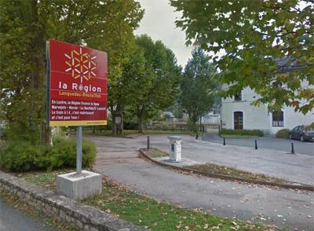

ASN = Aire de services avec stationnement nuit possible de :
LE MONASTIER PIN MORIÈS
(N° 638)
Accès/adresse :
Avenue de la République
48100 LE MONASTIER PIN MORIÈS
48100 LE MONASTIER PIN MORIÈS
Latitude : (Nord) 44.50898° Décimaux ou 44° 30′ 32′′
Longitude : (Est) 3.25154° Décimaux ou 3° 15′ 5′′
Tarif : 2013
Stationnement gratuit
Services: 2,50 €
Jetons à la station services à 200 m
Type de borne : RACLET
Services :


Autres informations :
4 emplacements goudronnés.

Le 06/06/2013 par lelito
de
Guy28
le 11/07/2013 :
La borne Raclet ne fonctionne plus, mais on peut vidanger les eaux grises. Stationnement nocturne possible, bien que le site ne soit pas agréable. Proximité de la route. Je n'ai pas testé.
La borne Raclet ne fonctionne plus, mais on peut vidanger les eaux grises. Stationnement nocturne possible, bien que le site ne soit pas agréable. Proximité de la route. Je n'ai pas testé.
de
Carol Hodgson
le 01/04/2011 :
October 2010
Small aire, just in front of the station, right by the road, easy to find.
Next to a fairly busy road, but not unduly noisy. Very practical place to stay as only a few minutes off A75. Short walk to the shops in the town
October 2010
Small aire, just in front of the station, right by the road, easy to find.
Next to a fairly busy road, but not unduly noisy. Very practical place to stay as only a few minutes off A75. Short walk to the shops in the town
de
lavande04
le 30/06/2010 :
Aire en bordure de route, bruyante avec seulement 4 places. Pratique pour les services
Aire en bordure de route, bruyante avec seulement 4 places. Pratique pour les services
de
Michael Balzer
le 07/09/2008 :
Gute Übernachtungsmöglichkeit an der A75 ! Einziges Manko: nur 4 Stellplätze (wir hatten Glück, der letzte war noch frei !). michiavanti
Gute Übernachtungsmöglichkeit an der A75 ! Einziges Manko: nur 4 Stellplätze (wir hatten Glück, der letzte war noch frei !). michiavanti
de
nenettemamita
le 10/08/2008 :
Aire bien pratique et bien indiquée en sortant juste de l'A75 mais hélas petite juste 4 places déjà prises à notre arrivée. Nous sommes donc allés à Chaudes-Aigues à 30 km plus loin.
Aire bien pratique et bien indiquée en sortant juste de l'A75 mais hélas petite juste 4 places déjà prises à notre arrivée. Nous sommes donc allés à Chaudes-Aigues à 30 km plus loin.
de
frien
le 20/07/2007 :
Une aire très sympa, propre et tranquille.
Une aire très sympa, propre et tranquille.
de
frien
le 20/07/2007 :
rustige en schone aire, absoluut niets te horen van de autoroute!klein, dus niet te laat komen.
rustige en schone aire, absoluut niets te horen van de autoroute!klein, dus niet te laat komen.
de
Michel Barre (13700)
le 07/08/2006 :
Cette aire n'est pas bruyante la nuit contrairement à ce que l'on pense. Sympa si on est 4 ou 5 maxi.
Cette aire n'est pas bruyante la nuit contrairement à ce que l'on pense. Sympa si on est 4 ou 5 maxi.
de
Guy01
le 24/07/2006 :
Aire bruyante et sale (beaucoup de mouches) mais pratique pour les services. Jetons en vente à la station service à 200 mètres (2,50 €).
Aire bruyante et sale (beaucoup de mouches) mais pratique pour les services. Jetons en vente à la station service à 200 mètres (2,50 €).